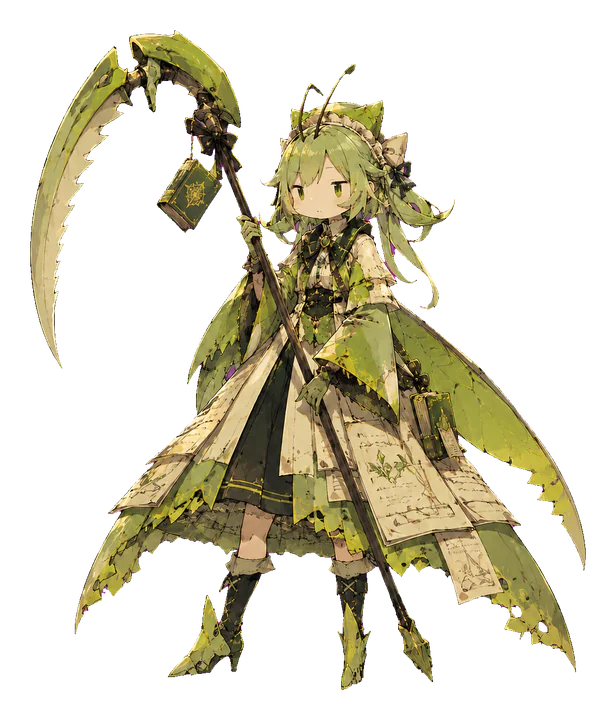
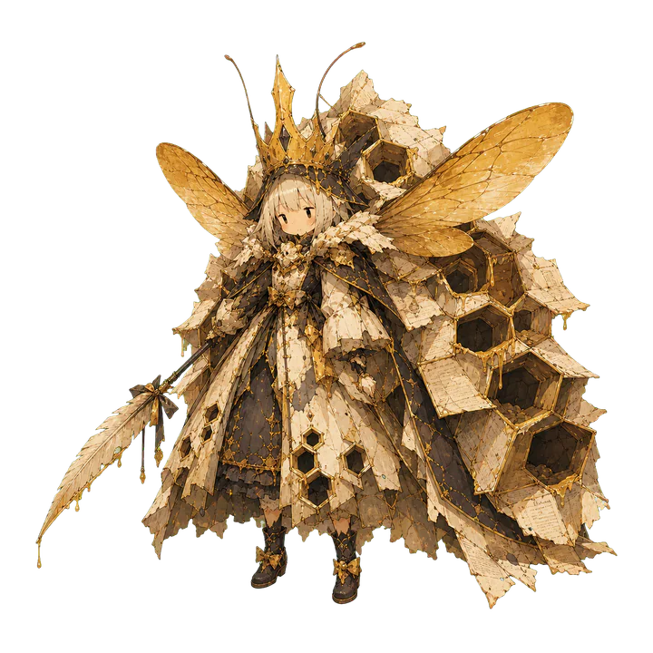
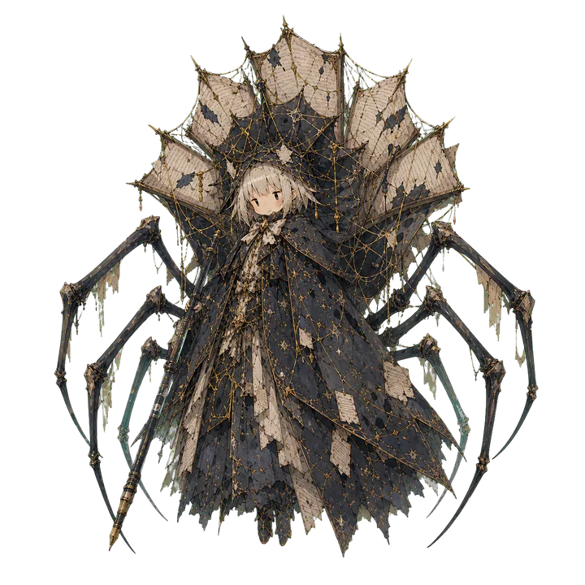

그래서 저희는 맥락을 설명하는 게임이 아니라,
맥락이 곧 규칙인 게임을 만들기로 했습니다.
문장을 조립해 이야기를 지키는
단어장 덱빌딩 로그라이트



처음 만난 4명 · v_0.5.37 · TypeScript + Vite + Three.js
「나는」 「다친 나는」 「우리는」
누가 쓰는 문장인가
「살짝」 「힘껏」 「미친듯이」
어떤 마음으로 쓰는가
「때렸다」 「막았다」 「감쌌다」
무슨 일이 벌어지는가
같은 동사라도 앞에 무엇이 오느냐에 따라
발동 여부·행동 종류·배수·부가 효과가 전부 달라집니다.
태그가 맞물리면 관용구가 터집니다. 게임에서 유일한 곱셈 요소이고, 배수 상한은 없습니다.
「고르면 손해」인 선택지는 하나도 없습니다. 실패·자해·부조화 패널티는 전부 폐지했습니다. — 선택지는 손해와 이득이 아니라 이득의 종류로 갈립니다.
매 전투마다 새 단어가 단어장에 등록되고, 그 단어가 기존 단어와 만나
전에 없던 관용구를 만듭니다. 같은 덱이라도 연결 순서가 다르면 완전히 다른 런이 됩니다.
층마다 적 구성과 필드 효과가 바뀝니다
사마귀 · 여왕벌 · 장로거미 · 먹물 왕바퀴
각자 방어를 무력화하는 고유 수단을 가집니다
약점과 관용구를 함께 맞힌 문장만 다음 부위로 관통합니다
4명이 48시간 안에 이 볼륨을 만들 수 있었던 이유는
AI를 도구가 아니라 팀원으로 붙였기 때문입니다.
AI에게 "카드 게임 만들어줘"라고 하면 평균적인 카드 게임이 나옵니다. 지켜야 할 불변식을 먼저 못 박아두면, AI가 코드를 짜든 밸런스를 잡든 우리 게임의 방향으로 수렴합니다.
4명이 각자 다른 파트를 AI와 병렬로 진행해도 규칙이 서로 어긋나지 않았습니다. 48시간짜리 팀에서 이게 가장 큰 비용 절감이었습니다.
무엇을 만들지 정하고, 재미를 판정하고, 방향을 되돌리는 것. AI는 그 판단을 실행 가능한 속도로 바꿔줬습니다.
단어 75개 × 관용구 34개 × 슬롯 3칸 × 아이템 패시브 × 필드 효과.
손으로 밸런스를 잡는 건 물리적으로 불가능합니다.
가능한 모든 문장을 컴파일해 배수 분포·불변식 위반을 자동 검출합니다. 데이터를 고칠 때마다 돌렸습니다.
전투 길이뿐 아니라 패턴이 실제로 몇 번 발동했는지까지 셉니다. 예고·소환·부위 파훼가 0이면 그 보스는 수치만 큰 허수아비라서요.
AI가 만든 건 에셋만이 아닙니다. 검증 도구까지 만들었습니다.
전부 플레이 가능한 빌드 안에 들어가 있습니다.
기획서 속 계획이 아니라, 지금 돌아가는 게임입니다.
파워포인트가 아닙니다. HTML입니다.
AI가 Little Token의 저장소를 통째로 읽고 만들었습니다.
게임 style.css의 팔레트 변수를 그대로 읽어왔습니다. 이 화면의 금빛은 #ffcf76 — 게임과 같은 값입니다. 폰트도 게임의 Griun 그대로입니다.
앞에서 보신 전투는 진짜로 계산된 것입니다. combos.csv 34개와 compiler.ts의 공식을 이 페이지가 그대로 돌립니다.
1920×1080 고정 무대를 뷰포트에 맞춰 축소하는 방식도 게임과 동일합니다. 발표 자료와 게임이 같은 규칙 위에 서 있습니다.
AI를 "어디에 썼는지" 설명하는 대신,
설명하는 자료 자체를 AI로 만들었습니다.
처음 만난 네 사람이 「맥락」이라는 단어 하나를 48시간 동안 규칙으로 번역한 결과입니다.
플레이하시면서 "아, 이런 문장도 되네?" 하는 순간이 한 번이라도 있었다면 — 저희 의도는 전달된 겁니다.
감사합니다.